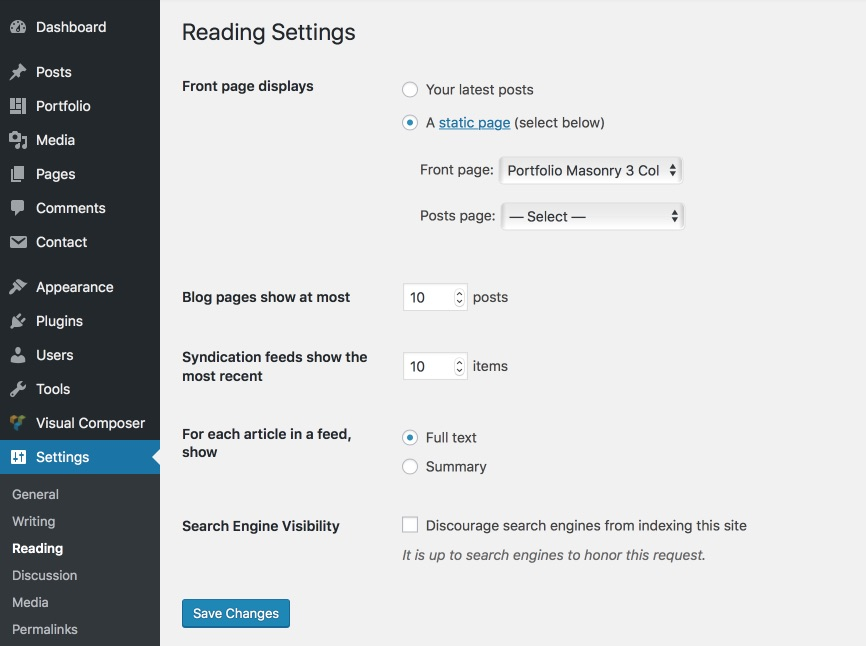
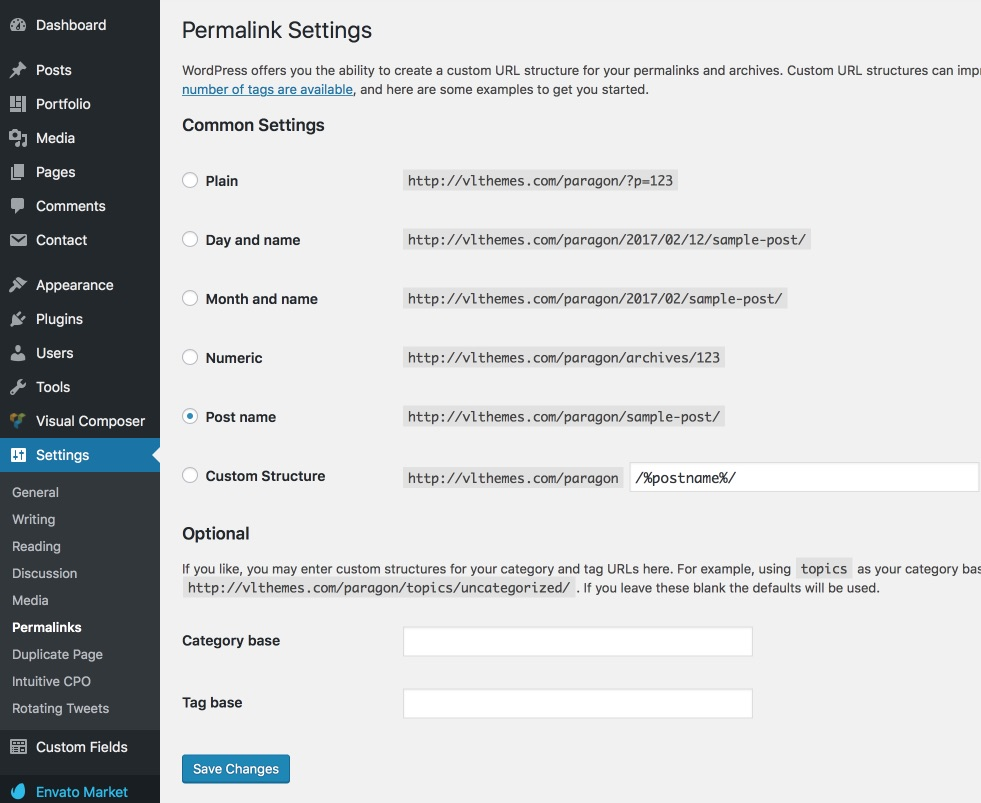
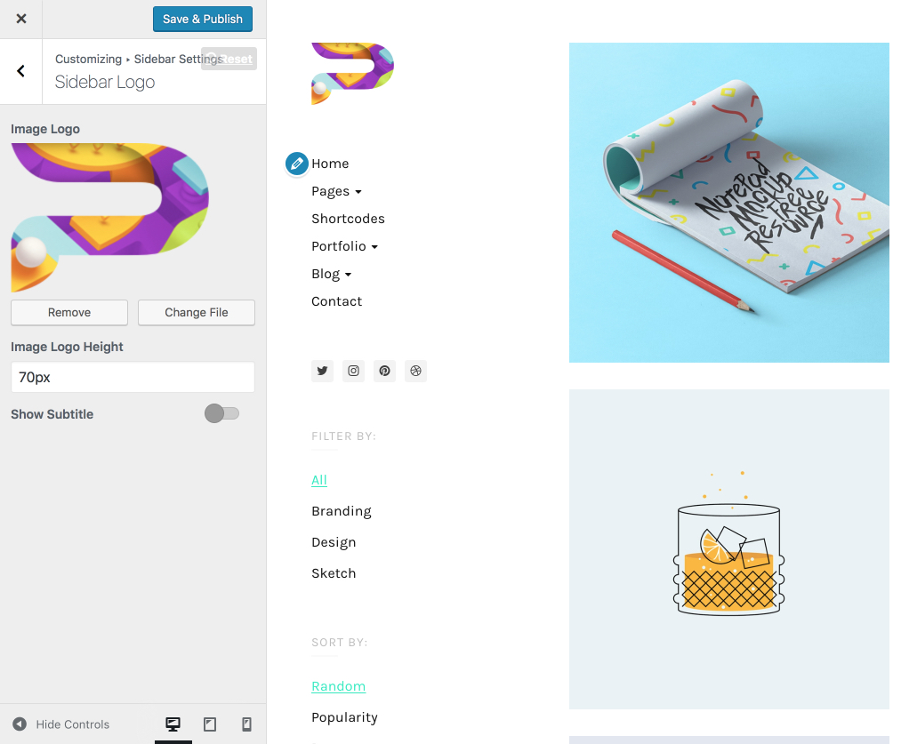
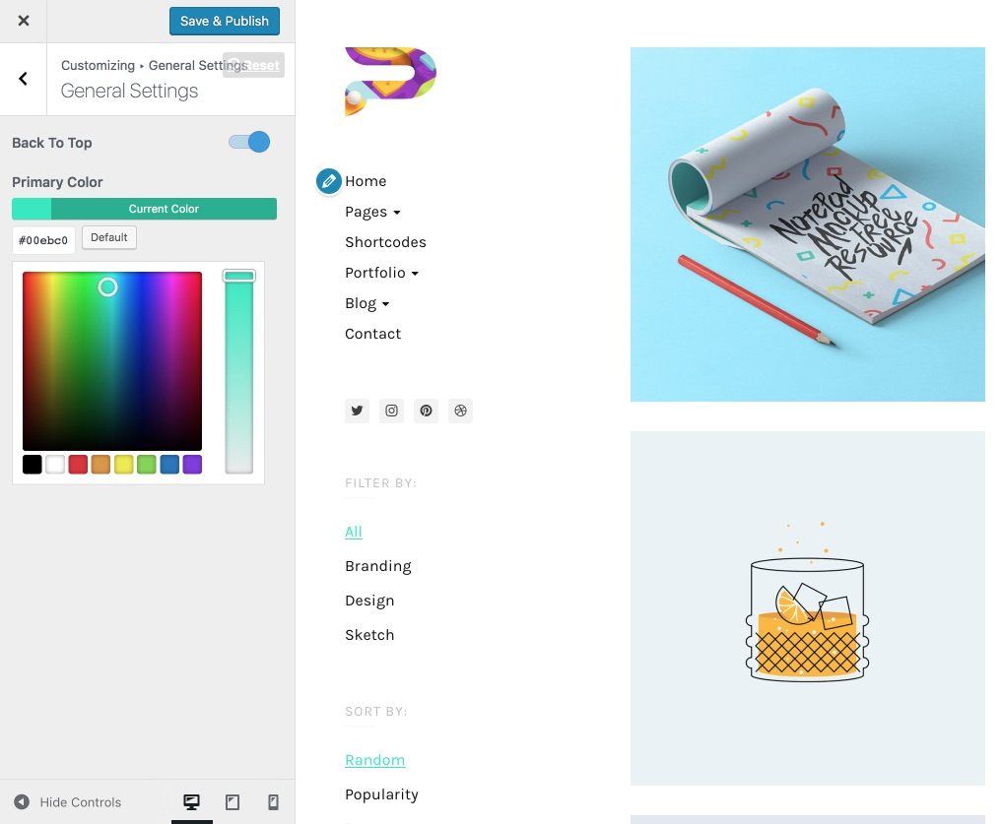
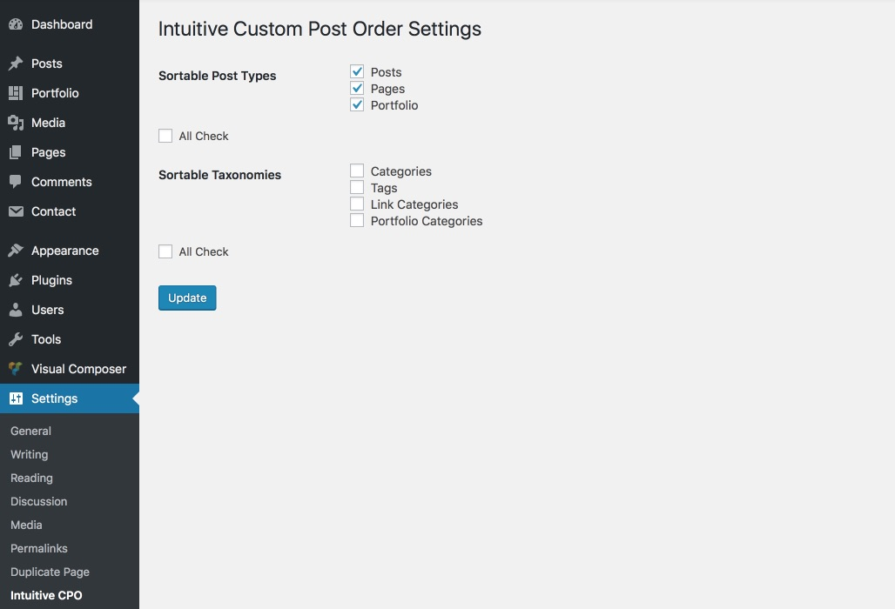
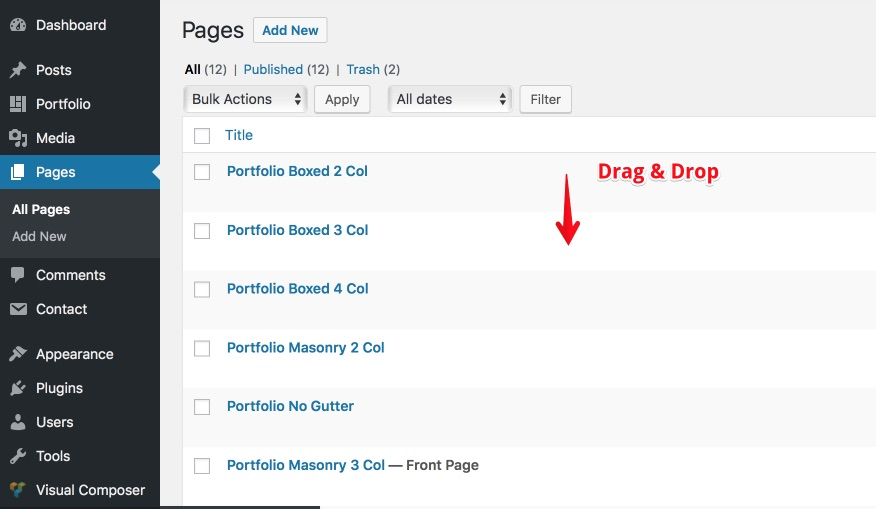

Quick Start
Quick Start
Welcome
 Get Help
Get Help
Thank you very much for purchasing my template. We've put a lot of hard work into it, and we hope you love it as much as we do. As far as the documentation is concerned, we have tried to cover as much as possible to help you get your new template up and running and to help you customise it.
If you have any questions or problems that aren't answered here, please feel free to email us
We love to hear your feedback - if you find any bugs or have suggestions for improvements please get in touch. Nearly all of the time we follow your advice and issue a rapid update to Paragon.
If you like our work, please rate it. If you’re about to rate it with less than 5 stars, please let us know the reason first and we will do our best to improve the theme. Thanks so much!
WordPress Information
Since WordPress is constantly being updated information about how to install WordPress may become out of date, so you always can read official guide HERE
Below are all the useful links for WordPress information:
- WordPress Codex – general info about WordPress and how to install on your server.
- Instructional Video – awesome How-To video created by Woo Themes.
- First Steps With WordPress – general information that covers a wide variety of topics.
- FAQ New To WordPress – the most popular FAQ’s regarding WordPress.
- WP101 Basix Training videos – some great videos from WPTuts on WordPress.
Theme Installation
Once you've downloaded the installation file on ThemeForest, extract it and locate a file called paragon.zip. You can install the theme by using one of two installation methods:
WordPress upload
- Login to WordPress admin.
- Go to Admin panel > Appearance > Themes > Add New > Upload Theme.
-
Click on Choose File and select
paragon.zip. - Click on Install Now.
- When your theme is successfully installed, click Activate to activate the newly installed theme.
FTP upload
- Using FTP client, login to the server where your WordPress website is hosted.
-
Using FTP client, navigate to the
/wp-content/themes/directory under your WordPress website's root directory. - Using FTP client, upload the Paragon directory to themes directory on remote server.
- Once uploaded, navigate to Dashboard > Appearance > Themes in the WordPress Dashboard and hit Activate below your newly uploaded theme.
When you use first or second method, please make sure that you're uploading the paragon.zip file, not entire package you downloaded. If you upload the wrong file you will get an error stating “Error: missing style.css stylesheet.”
Once installation is complete, your Paragon theme will be ready to use. You should now see Paragon theme as active.
Installing Required Plugins
When you first install the theme you'll see a popup on your dashboard from the theme asking you to install a number of plugins.
Allow the theme to install these for you. The plugins which are installed are dependent of the theme, the images below are for illustrative purposes only.
You can install all plugins at the same time by checking the box at the top of the this list.
Importing Demo Data
I have created a folder labeled Demo Content which contains an export for the Live Preview.
- Log-in to your WordPress backend and open your WordPress importer Tool>Import>WordPress.
-
Click on Choose file and select the
content.xml - Check the box Download and import file attachments. This will download attachments for images included in the Live Preview demo.
- Click Upload file and import.
You now just need to wait for the importer to finish. This might take a few minutes depending on your hosting server speed.
How to Set Up "Home Page"
Ok, so far we have installed the theme, we have installed the plugins and imported the demo data, whats next?
The final step in getting your new theme setup and ready for you to edit as you wish is to setup your home page and menu. To begin, head to Settings > Reading, here you will need to set your Front Page.
By default WP is set to show your latest posts, however to make your theme just like our demo you should select a static front page from the pages provided in the demo data.
Finally, if you have not done so already, its highly advisable to update your permalink settings. To do this, head to Settings > Permalinks and select any option other than default. We recommended 'postname' - as you can see below.
How to Update Theme
You can update your theme by performing the following steps:
- Download the latest Paragon file from ThemeForest.
- Extract it and locate
paragon.zip. - Extract
paragon.zipand locate the Paragon folder. - Replace content of the Paragon folder to the
/wp-content/themes/Paragonfolder of your web site.
Also you can use for update Envato Market plugin.
Setting Up a Logo
You can add your own custom logo in seconds, thanks to our easy to use theme options. To begin, just head to Appearance > Customize in your WordPress admin area.
From here you will need to navigate to the Header Settings > General Settings, where you will find an area to upload your logo.
Changing Primary Color
To change the primary color navigate to General Settings > Color Settings
Here you can control the colors site.
Contact Form 7
Contact Form 7 is our recommended form plugin for WordPress. It is a simple but powerful form creator for WordPress. Here we will show you how to use Contact Form 7 to create and edit a basic form.
After Contact Form 7 is installed, you will find a new menu item in your WordPress admin area called Contact, here is where your forms and created and edited. From the Contact main screen, you will see your first contact form, its usually a default form called Contact Form 1 OR if you have imported the demo data for our theme you may see a few forms that we have made specially for you.
<div class="row">
<div class="col-sm-6">
[text* your-name placeholder "Your Name"]
</div>
<div class="col-sm-6">
[email* your-email placeholder "Your Email"]
</div>
</div>
[text your-subject placeholder "Subject"]
[textarea your-message placeholder "Your Message"]
<div class="vl-text-right">
<button class="wpcf7-form-control wpcf7-submit vl-btn-submit"><span data-content="Submit">Submit</span></button>
</div>
You can add additional input from the right drop down, after setting up your form click Save button from right.
Visual Composer
Since Visual Composer 4.8 - the process of activating VC for use on custom post types such as Portfolio has slightly changed.
The area can now be found under the Role Manager Tab within the Visual Composer settings area.
Once here, navigate to the Post Type dropdown and switch from Pages and Post to Custom - this will then allow you to check each post type you wish to enable Visual Composer on.
All Shortcodes are integrated in Visual Composer you can find them under VLThemes tab.
Helper Class
.vl-text-white- color text is white.vl-text-right- text align right.vl-text-left- text align left.vl-text-center- text align center.vl-text-justify- text align justify.vl-hidden- hide block.vl-no-select- no selected element.vl-pull-left- float left.vl-pull-right- float right.vl-center-block- center block.vl-sticky-sidebar-parent,.vl-sidebar-fixed,.vl-content-fixed- fixed sidebar
Change the Order
Sadly, by default, WordPress has no easy method built into it for taking control of things such as the order of your Posts, categories (Portfolio, Team, Classes etc based on your theme) - Thankfully there is a very handy plugin which can help - Intuitive Custom Post Order
To install the plugin, simply head to Plugins > Add New and search for Intuitive Custom Post Order - once installed, you will need to head to Settings > Intuitive CPO to set things up. Once there you will see the following screen (the items will vary depending on your theme)
Simply Tick the box next to the content you wish to control and hit save.
Now you can quickly and easily re-order your items by simply dragging them within the WP Dashboard - you can see this wonderful plugin in action below.
 Child Theme
Child themes are separate themes that rely on a parent theme for most of their functionality. If you are using a child theme, WordPress will check your child theme first to see if a specific functionality exists. If it doesn’t, it will use the parent theme. This is great because it allows you to modify only what you need.
Child themes should always be used if you plan on modifying even a single character in your theme.
If you plan to edit the theme files, like style.css, I`m suggesting you to install both paragon.zip and paragon-child.zip themes, then activate the child theme. Child themes are great because allow you to edit the theme and also lets you update the original theme in the future, without loosing your edited files work.
More about child themes and how to use them you can read here: LINK.
Translation Theme
Don`t forget to rate it
Follow Us Follow Us Subscribe UsGet Help